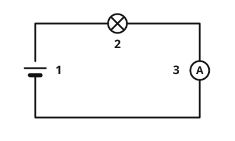

Current
The idea
A small lamp and a hairdryer both run on electricity, but the hairdryer needs much more of it. How much current flows is told by the current (in German: Stromstärke). Think of the circuit as a water cycle: the current is like the amount of water that flows past one place every second. The picture helps, but it has limits: electricity is not water, and wires are not hollow.
What to remember
- Current
The current says how much electric current flows in a circuit. Its symbol is and it is measured in amperes (A).
- Ammeter
An ammeter measures the current. You put it into the circuit so that the current flows through the device.
Typical values: a torch bulb needs about 200 mA, that is 0.2 A. A hairdryer needs about 9 A.

The ammeter sits in the circuit, in series with the lamp: all the current flows through the device. Labels: 1 battery, 2 lamp, 3 ammeter.
Source: https://github.com/lernapps/elektrizitaet. Licence: CC0-1.0.Never in parallel
An ammeter lets the current through almost without hindrance. If you connect it in parallel, for example straight across the battery, you create a short circuit: far too much current flows.
Example
Measuring the bulb
The ammeter shows 0.25 A. That is 0.25 · 1000 = 250 mA. So a bulb with 250 mA needs a little more current than the torch bulb above.
Practice
Task no. 1
Task: The battery has 9 V. Build the ammeter in correctly and choose the resistor so that it shows 0.9 A.
How it works: tap a place to build the ammeter in there. Tapping again takes it out. Choose the resistor. Then switch the power on and read the ammeter.
The power is off. Switch it on or check, then it measures.
Task no. 1
The battery has 9 V. Build the ammeter in correctly and choose the resistor so that it shows 0.9 A.
The ammeter can be built in at three places: 1 top wire, 2 bottom wire, 3 straight across the battery. The resistor is 10, 20, 30, 50 or 100 Ω.
Solution
The ammeter in the top or bottom wire (place 1 or 2), never straight across the battery, and a resistor of 10 Ω, because 9 V : 10 Ω = 0.9 A.
Exercise
Solution
You put it into the circuit, in series with the lamp. right answer
Only when all the current flows through the device can it measure it.
You connect it in parallel with the lamp.
Connected in parallel, the ammeter bypasses the lamp: that makes a short circuit.
You only hold it against the battery.
An ammeter only measures what flows through it. Held against the battery alone, nothing flows through the device.
The ammeter must be in the circuit so that the current flows through it.
More on it:
Exercise
Solution
Right answer: The statement is true.
1 A is 1000 mA, so 0.5 A is exactly 500 mA.
More on it:
Exercise
Three worked tasks, each with its solution:
Task no. 1
A device needs 300 mA. What is the current in amperes?
Hint
1 A is 1000 mA. Divide the number by 1000.
Solution
- 300 mA is 0.3 A.
Right answer: 0.3 A
Task no. 2
A device needs 250 mA. What is the current in amperes?
Hint
1 A is 1000 mA. Divide the number by 1000.
Solution
- 250 mA is 0.25 A.
Right answer: 0.25 A
Task no. 3
A device needs 400 mA. What is the current in amperes?
Hint
1 A is 1000 mA. Divide the number by 1000.
Solution
- 400 mA is 0.4 A.
Right answer: 0.4 A